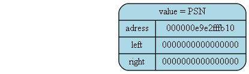
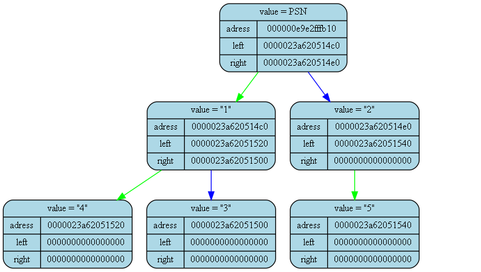

<pre>
<pre>

Tree dump from (int main()) at (main.cpp) at line (15):
tree [000000e9e2fffae0] "&tree" at (int main()) at (main.cpp)(13):
{
	status   = 1
	error    = 0
	size     = 1

	(PSN)
}
<pre>

Tree dump from (int main()) at (main.cpp) at line (24):
tree [000000e9e2fffae0] "&tree" at (int main()) at (main.cpp)(13):
{
	status   = 1
	error    = 0
	size     = 6

	((("4")"1"("3"))PSN(("5")"2"))
}
